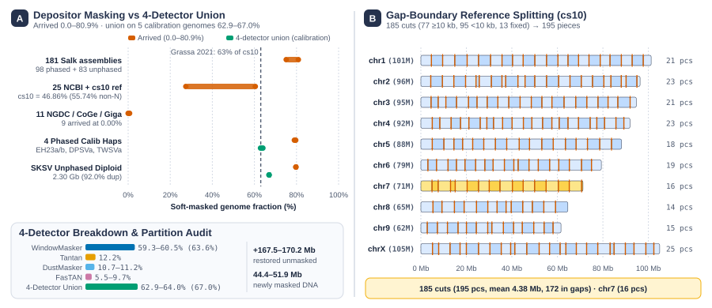
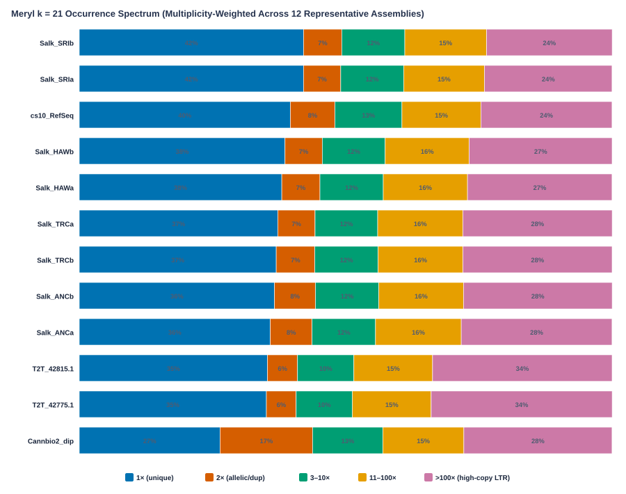
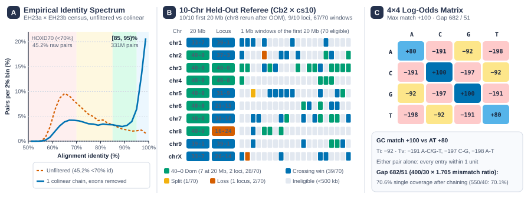
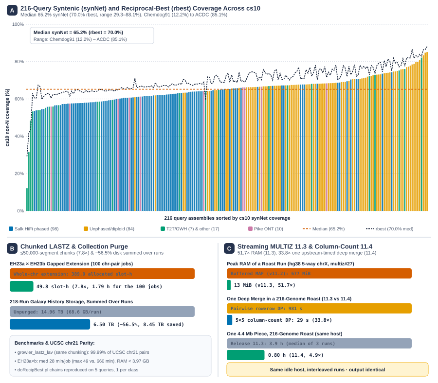
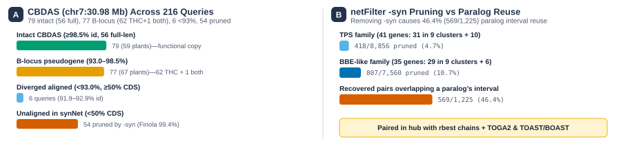
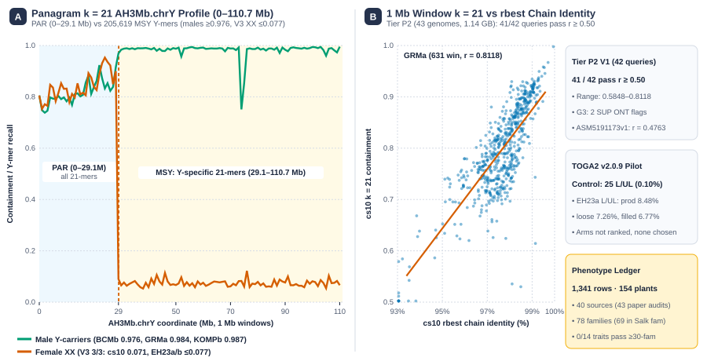

AFour cross-species bottlenecks
In Cannabis sativa, interspersed repeats (63 to >70%, mostly LTR retrotransposons) surround dense tandem metabolic arrays (Grassa et al. 2021, Lynch et al. 2025, Pike et al. 2026). Projecting 216 query assemblies onto the linear cs10 (CBDRx) reference coordinate grid confronts four vertebrate-default obstacles:
- 1Masking biasArrived soft-masking spans 0.00–80.86% across 218 assemblies, and KegAlign (Gulhan et al. 2025) seeds only through uppercase bases
- 2Cross-species matrixHOXD70 (Chiaromonte et al. 2002) was trained below 70% identity, where 49.7% of pooled Cannabis pairs fall (Ts/Tv = 0.872 vs. a 0.74 chance level)
- 3Superlinear scalingWhole-chr LASTZ (Harris 2007) scales as O(n1.9), while 217-way MULTIZ (Blanchette et al. 2004) overflows 32-bit scores and buffers MAFs in RAM
- 4Macro-syntenic netsHuman-mouse
netFilter -syn(Kent et al. 2003,maxFar = 200 kb) prunes rearranged tandem gene clusters

cs10. Panel B: across cs10, 185 chromosomal cuts (77 at N-runs ≥ 10 kb, 95 at N-runs under 10 kb, and 13 fixed 5 Mb cuts in wfi_cs10_splits.bed) partition the assembly into 195 ~5 Mb pieces plus 26 unplaced scaffolds, mitochondrion NC_029855.1, and small.00. mafSplit divides straddling blocks without base loss, and maf_concat rejoins the pieces.BStandardized 4-detector repeat masking
We curated 221 assembly records—217 non-redundant in MULTIZ (cs10 plus 216 queries across 164 prefix groups and 156 plants, scored with rosales_odb12 BUSCO, Lynch et al. 2025, Pike et al. 2025, 2026). To replace incompatible depositor masks, our brc-tools UDT wrappers strip arrived masks and unite four de novo detectors (Morgulis et al. 2006a, 2006b, Frith 2011, Myers 2026):
| Assembly / Cohort | Arrived Mask | 4-Detector Union | Partition Audit and Compute |
|---|---|---|---|
| 181 Salk assemblies (98 phased + 83 unphased) | 75.12–80.86% | 62.19–67.04% (5-genome pilot: 22.61 → 4.85 pt spread) | Depositor-only masking frees ~22% of each calibration haplotype to seed (repeat status unmeasured) |
25 NCBI GenBank + cs10 | 27.42–60.43% (cs10 46.86% total, 55.74% non-N) | Leaves 44.26% of cs10 non-N bases open to seeding | |
| 11 NGDC / CoGe / GigaDB | 0.00–0.68% (9 kept at 0.00%) | Unmasked queries seed across all of their bases | |
4 Phased Calibration Haps (EH23a/b, DPSVa, TWSVa) | 79.00–79.61% | 62.90–64.02% (1.12-pt window) | WM 59.30–60.53%, Dust 10.7–11.2%, Tantan 12.2%, FasTAN 5.5–9.7% · 3.64–3.99 CPU-h/hap |
Diploid SKSV (2.30 Gb, 92.0% BUSCO dup) | 79.71% | 66.95% (4.05-pt panel window, WM 63.60%) | 432.1 Mb restored, 139.1 Mb newly masked · 10.34 CPU-h |

cs10, 8 Pike et al. 2026 ONT, 2 IMPD T2T) carry 35–42% 1× and 6–8% 2× multiplicity-weighted k-mers, whereas uncollapsed diploid Cannbio-2 (Braich et al. 2020) carries 27% 1× and 17% 2×.CEmpirical intra-species substitution matrix
We adapted the Chiaromonte et al. (2002) log-odds protocol across two phased haplotype pairs (EH23a × EH23b and DPSVa × TWSVa, 95.3% rosales_odb12 BUSCO completeness, 1.8–2.0% duplication). We restored her CDS excision (−7.3% of chained segments) and single-chain colinearity (--max-chains 1), and inverted the training window to [85, 95)% identity, 73.9% of whose bases are cross-chromosome. The filter enriched same-chromosome over cross-chromosome matches 8.2-fold on a Cb2 × cs10 slice (54.5% vs. a 6.6% median) and 10.9-fold over all 200 EH23a × EH23b groups (8.08% vs. 0.74%).
[85, 95)% pairs, symmetrized log-odds (Ts/Tv = 2.119, H = 1.4140 bits, either pair alone within 1 unit)axtChain shuffled-null suppression (EH23a chr1 × Morus) + scaled 682/51 gaps (70.6% single coverage)We normalized scores to a maximum match of 100 (+80 A/T, +100 C/G, −92 transitions, −191 A-C/G-T, −197 C-G, −198 A-T transversions). Across 40 false-match budgets (colinearity referee, gap-free), the matrix beat unit ±100 on 10/10 at 20 Mb, 10/10 loci, and 62/70 windows. Its gain over the unchained matrix was small (0.02–0.11% at 20 Mb) and 6/10 under minimap2. Production used it for all 218 runs.

Cb2 × cs10 chromosomes and 70 1 Mb windows. Panel C: symmetric 4×4 log-odds weights with 682/51 gap scaling.DCollection-native LASTZ and MULTIZ 11.3/11.4
- Growler LASTZ (
growler_ucsc_pair, LASTZ 1.04.52/1.04.60): Couples KegAlign v0.3.4 GPU collection seeding (Gulhan et al. 2025) with indexed.2bitarchives, compact LAV, and piped PSL chaining (Harris 2007, Kent et al. 2003). Batching anchor files into≤50,000-segment chunks cutsEH23a × EH23bgapped extension 7.8-fold (389.0 → 49.8 slot-h,1.79 hfor 100 jobs, 18% abovebatched_lastz, median 28 min/job, under3.97 GBRAM).growler_lastz_lav, which chunks identically, reproduced 99.99% of UCSC’shg38 × panTro6 chr21all.chainandrbest.chainpairs, anddoRecipBestchains on one query per class. - Storage and 218-run production cohort: Purging transient intermediate collections after workflow completion cut total Galaxy history storage across all 218 runs (54,554 jobs, 10,325 job-hours) from 14.96 TB to 6.50 TB (−56.5%,
8.45 TBsaved, summed). Syntenic nets cover a median 65.2% ofcs10non-N bases across 216 queries (range 12.2–85.1%, vs. 70.0% and 29.3–88.1% inrbest, with 40.0% diploid vs. 54.0% phased median query-side coverage). - Streaming 64-bit column-count MULTIZ 11.3/11.4: In v11.3 (
multiz#19, Blanchette et al. 2004), coordinate-ordered streaming cursors replaced in-memory MAF buffering (v11.2) andint64_taccumulators fixed 32-bit overflow across 29 deep blocks onNC_044376.1.02(24 with scores≥231). Peak memory fell 51.7-fold onhg385-waychrX(677 → 13 MiB). In v11.4 (multiz#28), factoringmz_yama.cDP loops through column nucleotide counts(cA, cC, cG, cT, cN)sped up one upstream-timed deep merge 33.8-fold (981 → 29 s). On one host running no other alignment job, a whole 4.4 Mb piece took3.9 → 0.80 h(4.9-fold, medians of three interleaved runs per release). Output is identical apart from#lines.

synNet (median 65.2%, range 12.2–85.1%) and rbest 1-to-1 (median 70.0%, range 29.3–88.1%) coverage across 216 queries by assembly class. Panel B: chunked LASTZ speedup, hg38 chr21 parity, and 218-run storage purge. Panel C: MULTIZ v11.3/v11.4 streaming RAM reduction (51.7×, human 5-way) and column-count DP speedup (33.8×, one merge).ETandem metabolic clusters and syntenic net limits
cs10tandem census and permutation audit: Under MCScanX tandem criteria (Wang et al. 2012) adapted to stricter BLASTp thresholds (E ≤ 10−10, top 10 hits), 3,035 ofcs10’s 25,296 RefSeq protein-coding genes reside in 1,208 tandem arrays (K = 0) and 5,123 (20.3%) in 1,796 clusters (K ≤ 10). These clusters include 41 terpene synthases (TPS) (31 in 9 clusters + 10 singletons) and 35 cannabinoid oxidocyclases (BBE-like) (29 in 9 clusters + 6 singletons includingCBDAS). Across 20,000 cluster-level permutations, nominal TPS low-identity enrichment (37.0% vs. 11.0% controls, p = 0.022) does not survive family-wise correction (pFWER = 0.12, threshold-free p = 0.40, BBE-like 2.8%, p = 0.59).- Functional
CBDASvs. B-locus pseudogenes: Atcs10functionalCBDAS(LOC115697762, chr7:30.98 Mb, Grassa et al. 2021), our 217-way alignment separates 79 assemblies (59 plants, including 56 Lynch full-lengthCBDAS) at≥98.5%identity and 6 assemblies below93.0%(≥50%CDS) from 77 assemblies (67 plants) at93.0–98.5%. In that band, 63 carry Lynch et al. (2025) annotations placing the alignment on the ~94% B-locus pseudogene that Laverty et al. (2019) described (62 in THC-dominant cultivars), and 14 carry none. netFilter -synpruning vs. paralog reuse: Applied beyond UCSC's contiguity rule, its human-mouse cutoffs (maxFar = 200 kb, plusminTopScore = 300,000for 14.5% of losses) pruned 4.7% of TPS (418/8,856: 4.2% clustered, 6.4% singleton) and 10.7% of BBE-like (807/7,560: 7.5% clustered, 26.2% singleton vs. 5.2%/13.1% controls). InsynNet, this dropped 54CBDASassemblies (under50%CDS), including Finola’s intact 99.4% transposed copy (CM011610.1:21.84 Mb, 26.8 Mb from its enclosing gap). RemovingnetFilter -synleaves 46.4% of recovered pairs (569/1,225) overlapping another family gene’s interval. Resolving them needsrbestnets or recalibrated thresholds with duplication-aware orthology (TOAST/BOAST, Hou et al. 2006, 2009).
cs10 chr7 (25.02–31.03 Mb) CBCAS and CBDAS cassettes
multiz217way at CBDAS (intact, ~94% B-locus, and pruned rows)

chr7 and netFilter -syn trade-off. Browser views of the 6 Mb cannabinoid synthase super-cluster (left) and multiz217way at CBDAS (right). Below: (A) 216-query CBDAS stratification and (B) netFilter -syn pruning vs. the 46.4% of recovered pairs overlapping another family gene.FPanagram bitmaps, TOGA2 pilot, and phenotype ledger
- Panagram v1.1.0 pan-k-mer indexing (
panagram_index/panagram_view, Jenike et al. 2026, Kokot et al. 2017, Aylward et al. 2023): Tier P1 (17 genomes:cs10+ 16 Salk haplotypes from 9 plants, 13.3 Gb) selected k = 21 over k = 31 on higher 1 Mb window Pearson r withrbestidentity across 16/16 Salk haplotypes (mean r = 0.7150 vs. 0.6901, Δr = +0.0249 within the 0.05 equivalence band). Tier P2 indexed 43 genomes (32.64 Gb, 5.05 h on 16 Laila slots, 1.14 GB index). It passed r ≥ 0.50 in 41 of 42 chain-scored queries (r = 0.5848–0.8118,Pink pepperr = 0.7376) and separated non-PARchrYcleanly (3/3 males 0.976–0.987 vs. 3/3 V3 females ≤ 0.0773 across 205,619 subsampledAH3Ma-absent positions). It flagged 2 Guppy 5 SUP trio-binned ONT haplotypes onG3count tolerance (Punto Rojo−10.4%,Cherry Pie−10.8%, Pike et al. 2025). Only one Sri Lankan ONT haplotype fell below 0.50 (ASM5191173v1, r = 0.4763, Merqury QV 24.01/24.11, Pike et al. 2026), for reasons still under investigation. - TOGA2 v2.0.9 orthology pilot (Kirilenko et al. 2023, Malovichko et al. 2026): On
cs10, we stratified all 25,261 nuclear protein-coding genes (33,639 transcripts, excluding mitochondrionNC_029855.1) into 24,503 standard and 758 reference-anomaly genes alongside 221 inventoriedall.chaindatasets (1.45 TB). On its zero-divergence identity-chain control, TOGA2 called 25 of 24,503 lost/uncertain (0.10%)—1 L + 24 UL against a ≤ 0.5% bar. OnEH23a, the production, loose, andRepeatFiller-filled-and-cleaned chains called 2,077 (8.48%), 1,778 (7.26%), and 1,660 (6.77%) standard genes L/UL. Filled and production arms disagree on 713 of 2,161 L/UL/M genes (33.0%), while production yields the fewest multi-copy false presences (4,306 standard genes vs. 5,058 loose and 5,245 filled). Because our top-ranked native-model check (B6) is still pending, the pilot selects no arm and reports no gene loss. - Pedigree-verified phenotype ledger: We joined 40 sources across 215 assemblies—30 publications (29 papers, including 2 supplements, plus 988 Lynch et al. 2025 Figshare rows across 190 assemblies from 43 audited extractions in
passed.tsv) and 10 NCBI BioSamples. This yielded 1,341 trait records across 154 plants in 78 pedigree families (69 plants in the largest Salk family, 71 singletons). Under strictmeasured/reportedfiltering, 0 of 14 traits pass our ≥30-family, ≥2-class (≥5 families/class) association screen.Varinspans 30 families (37/38 non-WT plants inHO40across 3 classes), whileChemotypereaches 30 families with 2 classes ≥5 only if Lynch’s HPLC methods sentence covers its table column.

chrY profile and rbest correlation. Panel A: chromosome-wide AH3Mb.chrY (0–110.7 Mb) k = 21 profile of PAR all-21-mer containment (0–29.08 Mb) and MSY male-specific 21-mer recall across 205,619 subsampled positions. Panel B: all 631 eligible 1 Mb windows on GRMa (r = 0.8118) with Tier P2, TOGA2, and phenotype scorecards.